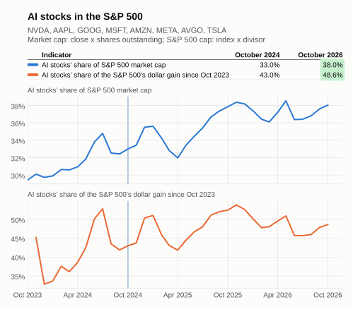

AI Adoption Trends
Updated Oct 28, 2026 at 19:57 PDT
Each indicator compares its most recently available value to that of the baseline period, Oct 2023–Oct 2024. Values are computed monthly.
On a case by case basis, some indicators may have additional adjustments: e.g. 3-month averaging for highly variable series, or normalization by inflation.
Summary
- Improving: 12
- Worsening: 4
- Neutral: 0
Hover over or tap a dotted-underlined column header for its description.
The economic series being tracked. Its definition and any adjustments are described below the table. | The indicator's average over the baseline period, Oct 2023–Oct 2024, after any adjustments. | The indicator's average over the most recent months, after the same adjustments. When a series has no data yet for those months, its latest available value is used. | The unit the series is published in by its source, for example billions of dollars or an index level. | How far the indicator has moved from the baseline value to the current value. Shaded green when the indicator moved in its good direction and red when it moved the other way; neutral indicators and unchanged values are not shaded. Bold when larger than 10 (in either direction) and measured in % or % pts, to flag the biggest moves. | How the Delta is measured: % is a percent change, used for levels, prices and indexes; % pts (percentage points) is a simple difference, used for series that are already rates, such as an unemployment rate; Δ is a simple difference in the series' own units, used for index readings where a percent change would mislead. | Which way is good news: rising means a rise is an improvement, falling means a fall is an improvement, and neutral means the move is shown but not judged. |
|---|---|---|---|---|---|---|
| NVIDIA Stock Price | 88.40 | 221.67 | U.S. Dollars | 150.76 | % | rising |
| Percentage of the S&P 500 Market Capitalization that is AI-related stocks | 12.11 | 7.36 | U.S. Dollars | -4.75 | % pts | rising |
| Percentage of the S&P 500 Returns that is AI-related stocks | 42.99 | 48.63 | U.S. Dollars | 5.63 | % pts | rising |
| PHLX Semiconductor Index | 4,632.10 | 11,952.25 | Index | 158.03 | % | rising |
| Hyperscaler Stock Index | 0.89 | 1.47 | USD | 65.92 | % | rising |
| TSMC Stock Price | 0.74 | 5.62 | USD | 656.68 | % | rising |
| Generative AI adoption outside work, adults 18-64 | 32.09 | 49.49 | Percent | 17.40 | % pts | rising |
| Businesses using AI in the past month (Census BTOS) | 4.95 | 22.95 | Percent of businesses | 18.01 | % pts | rising |
| Businesses paying for AI tools (Ramp AI Index) | 30.82 | 55.55 | Percent of businesses | 24.73 | % pts | rising |
| Construction spending: power | 186,826.89 | 185,429.28 | Millions of Dollars, Seasonally Adjusted Annual Rate | -0.75 | % | rising |
| CPI, electricity | 4.14 | 4.08 | Index 1982-1984=100 | -0.06 | % pts | falling |
| Real average hourly earnings: electrical contractors | 41.79 | 43.61 | Dollars per Hour | 4.36 | % | rising |
| Employment: electrical contractors | 1,088.08 | 1,156.13 | Thousands of Persons | 6.25 | % | rising |
| Construction job postings (Indeed) | 136.76 | 125.63 | Index Feb, 1 2020=100 | -8.14 | % | rising |
| Electrical engineering job postings (Indeed) | 137.09 | 146.27 | Index Feb, 1 2020=100 | 6.69 | % | rising |
| Employment: computing infrastructure, data processing and hosting | 482.79 | 457.80 | Thousands of Persons | -5.18 | % | rising |
8 AI stocks represent more than 40% of S&P 500

What each indicator means
- NVIDIA Stock Price: Sentiment gauge for a single company; read alongside ai_sox_index.
Reference: [1] - Percentage of the S&P 500 Market Capitalization that is AI-related stocks: Percentage of the S&P 500 Market Capitalization that is attributable to AI-related stocks
Converted to the combined market cap of NVDA, AAPL, GOOG, MSFT, AMZN, META, AVGO, TSLA as a percentage of the S&P 500's.
References: [2], [3], [4], [5], [6], [7], [8], [9], [10] - Percentage of the S&P 500 Returns that is AI-related stocks: Percentage of the S&P 500 Returns that is attributable to AI-related stocks
Converted to the dollar gain in the combined market cap of NVDA, AAPL, GOOG, MSFT, AMZN, META, AVGO, TSLA since baseline start, as a percentage of the S&P 500's gain.
References: [2], [3], [4], [5], [6], [7], [8], [9], [10] - PHLX Semiconductor Index: 30 largest U.S.-traded companies primarily involved in the design, distribution, manufacture, and sale of semiconductors.
Reference: [11] - Hyperscaler Stock Index: Hyperscaler stock index composed of major tech companies like Google. Daily stock prices in USD.
Averaged with AMZN, MSFT into an equal-weighted index; each stock is scaled to its peak price in the baseline window.
References: [12], [13], [14] - TSMC Stock Price: Chipmakers stock index composed of major chipmaking companies like TSMC. Daily stock prices in USD.
Averaged with 000660.KS, MU into an equal-weighted index; each stock is scaled to its peak price in the baseline window.
References: [15], [16], [17] - Generative AI adoption outside work, adults 18-64: Real-Time Population Survey GenAI Adoption Tracker. History from Aug 2024.
Reference: [18] - Businesses using AI in the past month (Census BTOS): This is a survey-based measure from the Census BTOS.
Reference: [19] - Businesses paying for AI tools (Ramp AI Index): Card and bill-pay data from Ramp customers, which skew tech-forward and VC-backed. Paid adoption only; reads well above Census by construction.
Reference: [20] - Construction spending: power: Generation and grid build, the other physical bottleneck alongside data centers.
Adjusted for inflation with price index PPIACO, in today's prices; then smoothed with a trailing 3-month average.
References: [21], [22] - CPI, electricity: Household cost side of the data center build.
Converted to the 12-month percent change.
Reference: [23] - Real average hourly earnings: electrical contractors: Industry (NAICS 23821), not occupation: occupational wages (OEWS) are annual. From the BLS API: FRED does not carry NAICS 238210 detail.
Adjusted for inflation with price index CPIAUCSL, in today's prices.
References: [24], [25] - Employment: electrical contractors: Likely a better tightness signal than wages, which adjust slowly. From the BLS API: FRED does not carry NAICS 238210 detail.
Smoothed with a trailing 3-month average.
Reference: [26] - Construction job postings (Indeed): Closest proxy for electrician openings: no occupation-level openings series exists. Indeed requires permission for republication.
Reference: [27] - Electrical engineering job postings (Indeed): Indeed requires permission for republication.
Reference: [28] - Employment: computing infrastructure, data processing and hosting: NAICS 518.
Smoothed with a trailing 3-month average.
Reference: [29]
8 AI-driven stocks represent almost 40% of the market capitalization of the S&P 500, and almost 50% of the gains the index made since October 2024.
The 8 stocks are: NVDA, AAPL, GOOG, MSFT,AMZN, META, AVGO, TSLA